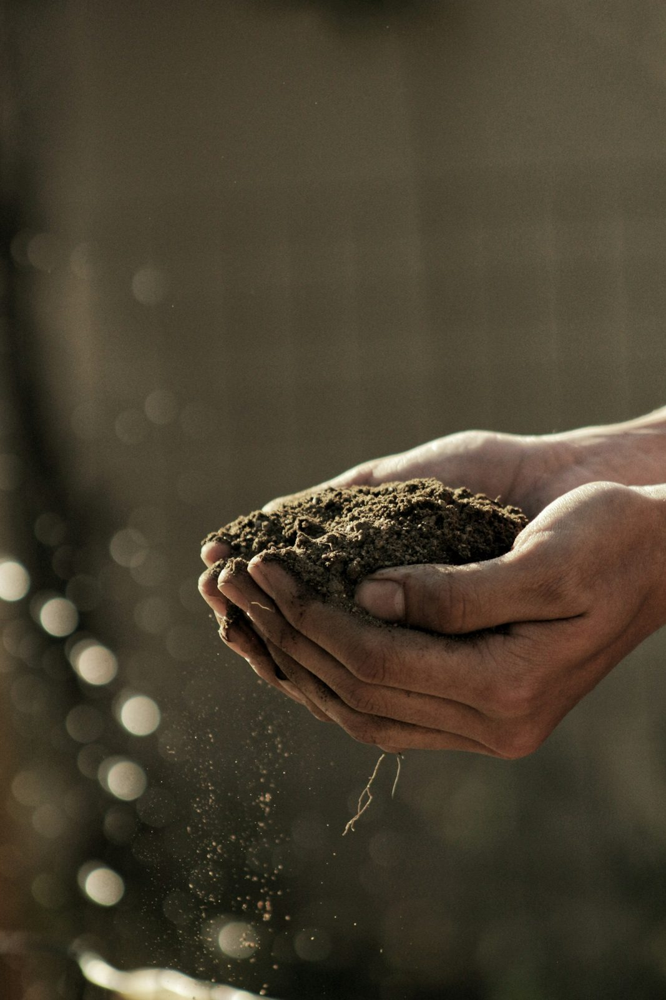

Accueil / L'atelier
Une equipe,
une passion du vivant
Au Cannet, Arbres et Nature met le soin du jardin et l'amour des belles essences au service des particuliers et des coproprietes.
Au Cannet, Arbres et Nature met le soin du jardin et l'amour des belles essences au service des particuliers et des coproprietes.
Nous pensons le jardin comme un organisme vivant : on le cree, on l'accompagne et on le laisse grandir. Notre engagement : un entretien regulier et soigne.

Arbres et Nature est nee d'un attachement profond a la nature et au cadre de vie mediterraneen. Creer un jardin, l'entretenir saison apres saison, voir un terrain se transformer en lieu de vie : c'est tout le sens de notre metier.
Nous intervenons aussi bien chez les particuliers, pour des villas et leurs jardins, qu'aupres des coproprietes — avec la meme exigence de proprete, de regularite et de bon conseil.
« Chaque jardin est suivi par une equipe a taille humaine, du premier rendez-vous a l'entretien dans la duree. »